Základy grafických aplikací
a metodika pluginů
BI-PGA · přednáška 01
Jiří Chludil · FIT ČVUT
Autorský podklad: ZS 2024/2025
Webová adaptace GRAFIT · 8. 10. 2026
40 snímků, původní obrázky a čtyři interaktivní doplňky.
Dobové hodnocení a verze nástrojů jsou označené. Ukázky jsou modely v prohlížeči.
Jiří Chludil · podklad 2024/25 · PDF, strana 1 ↗
Co budeme v předmětu řešit
- Rozšiřování 2D a 3D aplikací pomocí skriptů a zásuvných modulů.
- Grafické postupy: transformace, konvoluce, osvětlovací modely a textury.
- Datové struktury, modelování a další grafické algoritmy.
Jiří Chludil · podklad 2024/25 · PDF, strana 2 ↗
Co si vyzkoušíme na cvičeních
Praktický cíl
Naprogramovat rozšíření grafického editoru a zapojit vlastní algoritmus do jeho prostředí.
- Zásuvný modul do Blenderu.
- Zásuvný modul do GIMPu; v podkladu je zmíněný také Photoshop.
Jiří Chludil · podklad 2024/25 · PDF, strana 3 ↗
Sylabus: 3D část
- Základy, historie, motivace a obecná metodika pluginů.
- Blender: Python, metodika a programování pluginů.
- Modelovací techniky a práce s prameny.
- Osvětlování, texturování a realistický vzhled.
- Datové struktury pro 3D grafiku.
Jiří Chludil · podklad 2024/25 · PDF, strana 4 ↗
Sylabus: 2D část a další témata
- GIMP: metodika programování pluginů.
- Výpočetní metody, konvoluce a filtry.
- Metody zpracování obrazu.
- AI, LLM a procedurální generování v grafice.
- Tematická přednáška.
Jiří Chludil · podklad 2024/25 · PDF, strana 5 ↗
Literatura a dokumentace
Pracuj s konkrétní verzí
Aktuální dokumentace může popisovat jiné API než starý příklad. U kódu vždy uveď verzi aplikace.
Jiří Chludil · podklad 2024/25 · PDF, strana 6 ↗
Hodnocení: zápočet ve zdroji
- Semestrální úlohy: rozšíření 2D i 3D editoru; obtížnost určuje body.
- Ve zdroji maximálně 70 bodů za úlohy.
- Prezentace řešení v SAGELab/ggLab: 1 bod.
- Ve zdroji alespoň 35 bodů za úlohy, alespoň jedna 2D a jedna 3D úloha.
- Součet alespoň 36 bodů včetně prezentace.
Jiří Chludil · podklad 2024/25 · PDF, strana 7 ↗
Hodnocení: zkouška ve zdroji
- Ústní zkouška s písemnou přípravou.
- Principy rozšiřování grafických aplikací.
- Přehled algoritmů, postupů a struktur.
- Ve zdroji nejvýše 30 bodů, nejméně 15 bodů.
Archiv 2024/25
Závazné současné podmínky jsou na Courses ↗.
Jiří Chludil · podklad 2024/25 · PDF, strana 8 ↗
Proč umět tvořit pluginy
- Rychle naprogramovat něco užitečného v grafice.
- Zpřístupnit svůj algoritmus ostatním.
- Lépe využít grafický editor.
- Využít znalost Pythonu.
Motivace autora
Specializovaná schopnost spojuje grafické algoritmy s reálným pracovním prostředím.
Jiří Chludil · podklad 2024/25 · PDF, strana 9 ↗
Temná strana rozšiřování
- Dokumentace a nedostatek dobrých příkladů.
- Rozdíly mezi verzemi Pythonu a aplikace.
- Změny API při přechodu na novou verzi.
- Ladění, vývojové nástroje a kompatibilita.
Doplnění k dnešnímu GIMPu
GIMP 3.0 byl vydán 16. 3. 2025. Staré příklady pro řadu 2.x vyžadují kontrolu či portování. Oficiální zpráva ↗
Jiří Chludil · podklad 2024/25 · PDF, strana 10 ↗
Proč v podkladu Blender
- Autor porovnává Blender s 3ds Max a Mayou.
- Zmiňuje cenu, dostupnost pro studenty a kvalitu pro výuku.
- Cycles a Geometry Nodes.
- Integrovaný editor a nasazování rozšíření.
Dobový autorský pohled
Srovnání a licence se vztahují k podkladu 2024/25; nejsou aktuálním ceníkem nebo univerzálním žebříčkem kvality.
Jiří Chludil · podklad 2024/25 · PDF, strana 11 ↗
Proč v podkladu GIMP
- Autor porovnává GIMP a Photoshop: dokumentace, příklady, jazyky a nasazování.
- Otevřený a dostupný editor je vhodný pro experimentování.
- Podklad zmiňuje rozšíření pro Photoshop jako téma BP.
Dobový kontext
Původní závěry o Pythonu 2, cenách a kvalitě zachovává zdrojový text v Poznámkách. Pro dnešní vývoj ověř oficiální dokumentaci.
Jiří Chludil · podklad 2024/25 · PDF, strana 12 ↗
Teorie zásuvných modulů
Od algoritmu k použitelné funkci
Aplikace musí rozšíření najít, připravit jeho prostředky, předat mu data a bezpečně zpracovat výsledek.
- Co aplikace dovolí rozšířit?
- Kdy a jak plugin běží?
- Kdo vlastní data a paměť?
Jiří Chludil · podklad 2024/25 · PDF, strana 13 ↗
Makro: sekvence příkazů
Definice ze zdroje
Makroinstrukce představuje sekvenci příkazů jediným příkazem.
- Výhody: jednoduché použití, urychlení práce, bez nutnosti programování a kompilace aplikace.
- Omezení: obtížná parametrizace; v tomto modelu pouze skládá existující funkce.
Jiří Chludil · podklad 2024/25 · PDF, strana 15 ↗
Skript: program nad rozhraním
Princip
Program ve skriptovacím jazyce využívá funkce a rozhraní hostitelské aplikace.
- Výhody: snadné použití, základní programování, bez kompilace aplikace.
- Omezení ve zdroji: znalost jazyka a API, parametrizace a možnosti ladění.
- Rozsah rozšíření závisí na tom, co hostitel zpřístupní.
Jiří Chludil · podklad 2024/25 · PDF, strana 16 ↗
Knihovna: integrace do aplikace
- V pojetí zdroje rozšíření s přístupem ke zdrojovému kódu a kompilací aplikace.
- Dobrá rozšiřitelnost, ladění a přesně definované rozhraní.
- Vyžaduje vhodný jazyk/API, vývojové prostředí a znalost hostitele.
Rozlišuj pojmy
Knihovna a plugin se obecně nevylučují. Zde porovnáváme způsob integrace, ne příponu souboru.
Jiří Chludil · podklad 2024/25 · PDF, strana 17 ↗
Plugin: rozšíření bez přestavění hostitele
- Bez kompilace celé rozšiřované aplikace.
- Integrace do uživatelského rozhraní.
- Jazyky a rozsah funkcí určuje dostupné API.
- Vlastní vývojové prostředí a vyšší znalost programování.
- Potřeba dobře znát rozhraní a data hostitele.
Jiří Chludil · podklad 2024/25 · PDF, strana 18 ↗
Přístupy lze kombinovat
- Plugin umožňující skriptování.
- Plugin implementovaný pomocí skriptovacího jazyka.
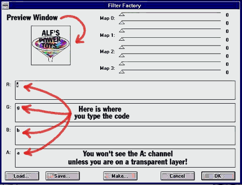
Filter Factory: výrazy uvnitř filtru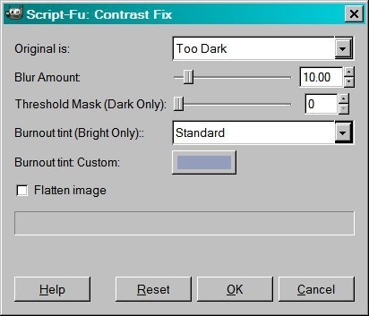
Script-Fu: parametrické rozhraníJiří Chludil · podklad 2024/25 · PDF, strana 19 ↗
Jak staré jsou pluginy?
„Kdo je starší: přednášející, nebo zásuvný modul?“
Rozšiřování aplikací má delší historii než dnešní grafické editory.
Jiří Chludil · podklad 2024/25 · PDF, strana 20 ↗
Raná historie podle podkladu
- Okolo 1970: EDT, textový editor na Unisys/UNIVAC.
- 1986: SuperPaint pro Mac.
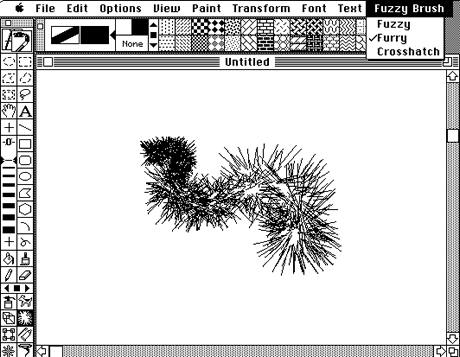
SuperPaint: historické uživatelské rozhraníJiří Chludil · podklad 2024/25 · PDF, strana 21 ↗
HyperCard a QuarkXPress
- 1987: HyperCard.
- 1987: QuarkXPress.
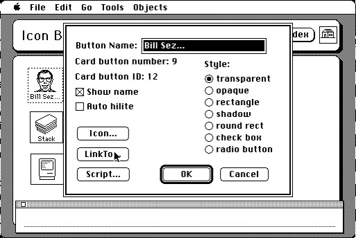
HyperCard: definice objektu a skriptu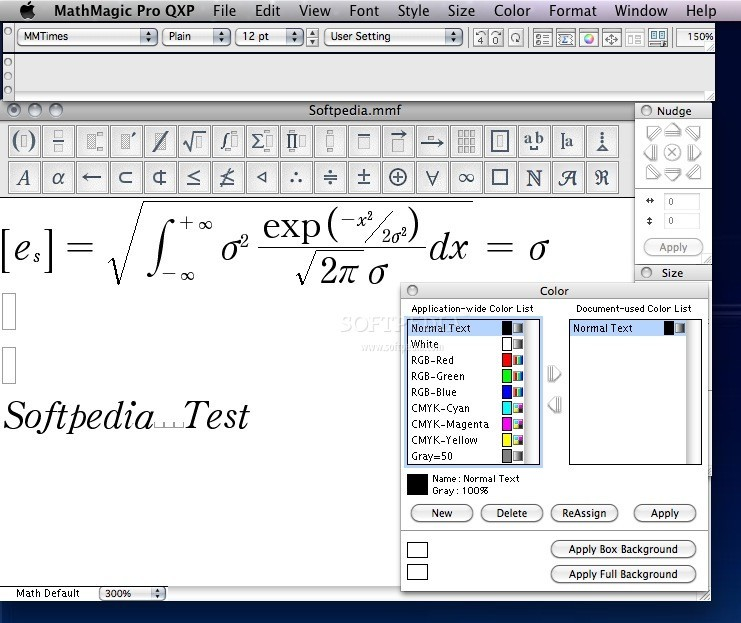
QuarkXPress: rozšíření prostředíJiří Chludil · podklad 2024/25 · PDF, strana 22 ↗
A co bitmapové editory?
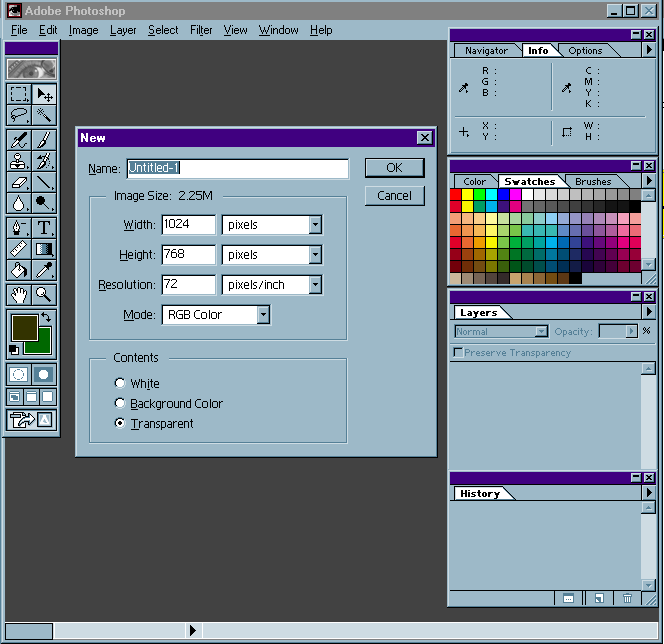
Historický Photoshop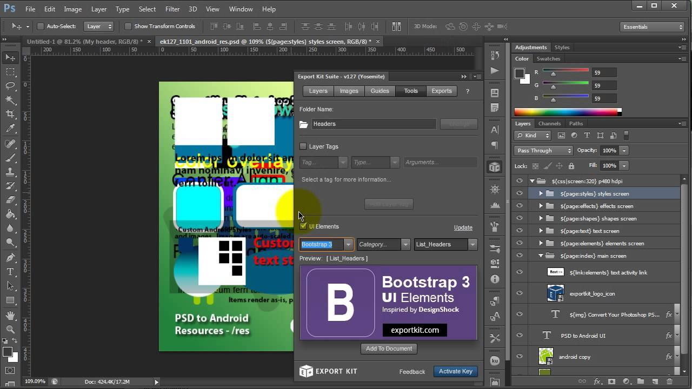
Photoshop: zásuvná funkce v prostředí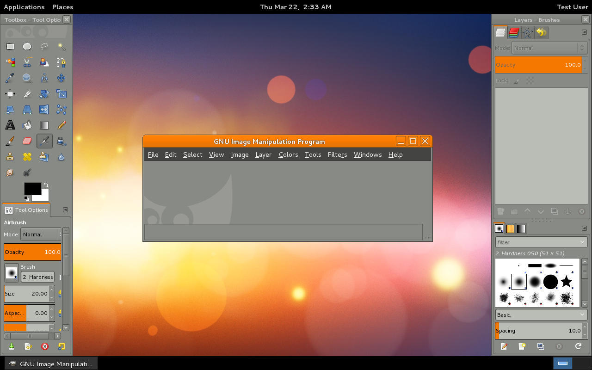
GIMP: rozšíření v editoru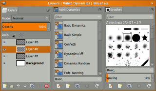
GIMP: práce s vrstvami a štětciJiří Chludil · podklad 2024/25 · PDF, strana 23 ↗
Photoshop: chronologie ze zdroje
- 1990: verze 1.0; zdroj uvádí Mac a pozdější Windows.
- 1991: zdroj uvádí 2.5 a typy filter, import, export, format.
- 1994 a 1996: další typy modulů a automatizace podle zdroje.
- 2002: náhledy a velké formáty.
- 2024: ve zdroji verze 25.
Převzatá chronologie
Data a číslování jsou reprodukcí historického podkladu; některá přiřazení vyžadují ověření. Nejde o aktuální verzi Photoshopu.
Jiří Chludil · podklad 2024/25 · PDF, strana 24 ↗
GIMP: zdroj a pozdější vývoj
- Podklad sleduje verze 0.54, 0.99, 1.0, 2.0 a vývojovou řadu 2.99.
- Ve zdroji 2024/25 je GIMP 3.0 ještě očekávaný.
Ověřený doplněk GRAFIT
GIMP 3.0 byl vydán 16. 3. 2025. Dnešní API tedy ověřuj v dokumentaci pro řadu 3, ne podle dobového „?“ v podkladu. Zdroj ↗
Jiří Chludil · podklad 2024/25 · PDF, strana 25 ↗
Kde jsou hlavní problémy?
Od hotového algoritmu k pluginu
Nestačí jen vypočítat výsledek. Je potřeba zapojit funkci do prostředí jiné aplikace.
- Registrace a konfigurace.
- Životní cyklus a předávání dat.
- Uživatelské rozhraní, paměť a algoritmy.
Jiří Chludil · podklad 2024/25 · PDF, strana 26 ↗
Co je potřeba vyřešit
- Typ modulu.
- Konfigurace prostředků.
- API hostitelské aplikace.
- Životní cyklus.
- Uživatelské rozhraní.
- Management paměti.
- Matematické a grafické funkce.
Jiří Chludil · podklad 2024/25 · PDF, strana 27 ↗
Typy pluginů bitmapových editorů
- Filtr.
- Import.
- Export.
- Souborový formát.
- Výběr.
- Výběr barvy.
- Automatizace.
Jiří Chludil · podklad 2024/25 · PDF, strana 28 ↗
Konfigurace a registrace
- Název, popis a autor.
- Umístění v menu.
- Verze a podporované formáty.
- Parametry, rozsahy a výchozí hodnoty.
- Režimy zpracování obrazu.
- Omezení velikosti obrazu.
Jiří Chludil · podklad 2024/25 · PDF, strana 29 ↗
API: data a volání
Strukturální API
Hostitel a plugin si předávají struktury s poli, parametry a případně callbacky.
Funkcionální API
Plugin volá funkce hostitele; parametry mohou opět obsahovat struktury.
V praxi může jít o kombinaci obou přístupů.
Jiří Chludil · podklad 2024/25 · PDF, strana 30 ↗
Příklad struktury: řízení a obraz
| Pole / pojem | Význam |
|---|
| abortProc | Callback pro dotaz na přerušení. |
| progressProc | Callback pro hlášení průběhu: aktuální index a celkový počet. |
| parameters | Handle parametrů z nastavovacího dialogu. |
| imageSize | Rozměry obrazu nebo výběru. |
| imageMode | Režim obrazu, například RGB nebo CMYK. |
| filterRect | Oblast obrazu nebo ohraničení výběru. |
Jiří Chludil · podklad 2024/25 · PDF, strana 31 ↗
Příklad struktury: paměť a kanály
| Pole / pojem | Význam |
|---|
| maxSpace | Kolik bajtů může plugin současně použít. |
| bufferSpace | Plánovaná paměť pro interní buffery a tabulky. |
| planes | Počet kanálů obrazu včetně alfy. |
| inLoPlane / inHiPlane | První a poslední vstupní kanál ke zpracování. |
| outLoPlane / outHiPlane | První a poslední výstupní kanál k zápisu. |
Jiří Chludil · podklad 2024/25 · PDF, strana 32 ↗
Životní cyklus: hostitel volá plugin
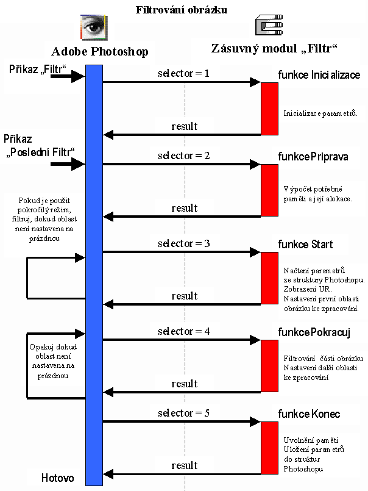
Originální schéma: kliknutím zvětši.Interaktivní doplněk GRAFIT · model tří bloků
- Inicializace
- Příprava
- Start
- Pokračuj
- Konec
Jiří Chludil · podklad 2024/25 · PDF, strana 33 ↗
Uživatelské rozhraní pluginu
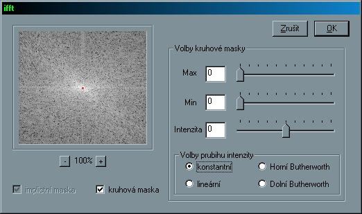
Původní dialog filtru s parametry a náhledem- Srozumitelné parametry a jejich rozsahy.
- Zpětná vazba: co se změní a kdy se výsledek potvrdí.
Jiří Chludil · podklad 2024/25 · PDF, strana 34 ↗
Události a živý náhled
VstupNáhled
Náhled je zapnutý.
Původní schémata práce s náhledem
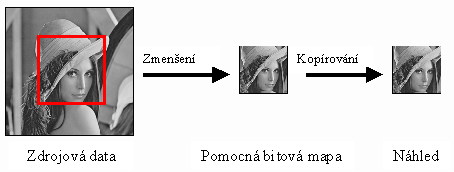
Zmenšení dat pro náhled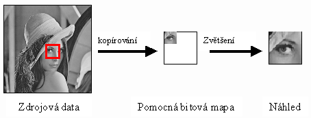
Výřez a zvětšení v náhleduJiří Chludil · podklad 2024/25 · PDF, strana 35 ↗
Paměť: celý obraz, nebo bloky?
- Celý obraz
- 128 MiB
- Pracovní blok
- 16 MiB
0 / 8 bloků
Rozpočet nezahrnuje data hostitele, sousední halo, cache nebo paměť knihoven.
Původní ilustrace rozdělení obrazu
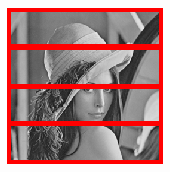
Zpracování po pruzích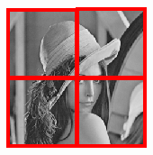
Zpracování po dlaždicíchJiří Chludil · podklad 2024/25 · PDF, strana 36 ↗
Odkud vzít grafické funkce
- Vnitřní knihovny aplikace.
- Externí knihovny.
- Vlastní implementace.
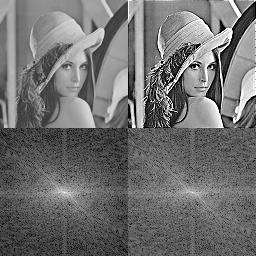
Ukázka obrazových funkcí ze zdroje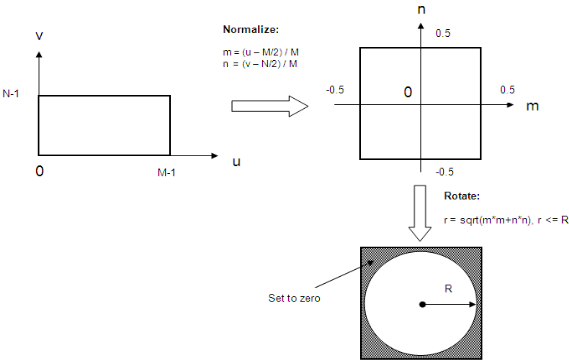
Normalizace souřadnic pro grafickou operaciJiří Chludil · podklad 2024/25 · PDF, strana 37 ↗
Co si z přednášky odnést
- Orientace v organizaci předmětu a jeho zdrojích.
- Rozdíl mezi makrem, skriptem, knihovnou a pluginem.
- Historický kontext rozšiřování aplikací.
- Typ, konfigurace, API, životní cyklus, UI, paměť a algoritmy.
Kontrolní otázka
Kterou část řeší samotný algoritmus a kterou spolupráce s hostitelskou aplikací?
Jiří Chludil · podklad 2024/25 · PDF, strana 38 ↗
FIT výzva ze zdroje
„Chceme být FIT?“
Původní podklad navrhuje přesun na cvičení pěšky po schodišti společně s cvičícím.
Dobová poznámka: THA:1455 a T9:348. Nejde o dnešní rozvrh.
Jiří Chludil · podklad 2024/25 · PDF, strana 39 ↗
Závěrečná výzva ze zdroje
„Chceme být super FIT?“
Původní snímek navrhuje cestu po schodišti do 14. patra.
Konec původní přednášky. Zpět na Výuku · Původní PDF
Jiří Chludil · podklad 2024/25 · PDF, strana 40 ↗